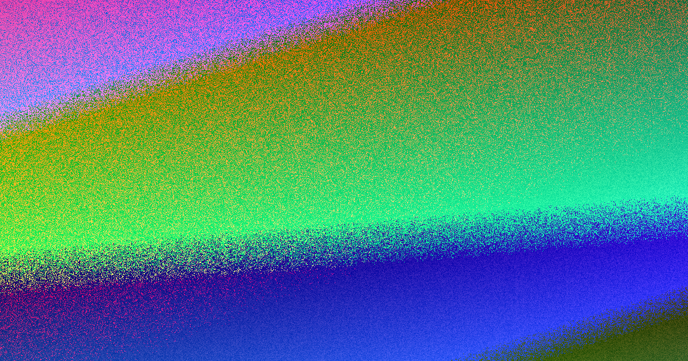

In 2026, first home buyers in North Brisbane can significantly reduce their upfront cash requirement by combining the $30,000 Queensland First Home Owner Grant, the federal First Home Guarantee and transfer duty concessions. For a $700,000 new property, these mechanisms can lower the necessary funds to approximately $35,000, compared to roughly $170,000 for a standard purchase without support. A <a href="https://sitesau.github.io/homeloanbrokernorthbrisbane-150/">first home buyer loan north brisbane</a> structured around these schemes eliminates Lenders Mortgage Insurance and reduces the initial deposit burden.
For local buyers, first home buyer loan north brisbane costs requires a precise calculation of deposits, government incentives and third-party fees.
First Home Buyer Loan North Brisbane Costs Explained
The most significant initial cost for any property purchase is the deposit. Standard lending conditions typically require a borrower to provide a 20 per cent deposit to avoid paying Lenders Mortgage Insurance. On a median-priced property in the northern corridors, this can amount to over $140,000. However, the federal First Home Guarantee allows eligible buyers to purchase with a deposit as low as 5 per cent. The government acts as a guarantor for the difference, which removes the LMI requirement. This insurance usually costs between $15,000 and $25,000 on a 95 per cent loan, so eliminating it creates substantial immediate savings. Buyers must ensure their income sits below the caps of $125,000 for singles or $200,000 for couples to qualify for this benefit.
The financial impact of the First Home Owner Grant
The Queensland First Home Owner Grant provides a direct cash contribution to reduce costs. Currently set at $30,000 for eligible new builds, this grant is paid at settlement and effectively offsets the deposit or other purchase expenses. This concession is scheduled to revert to $15,000 from 1 July 2026, meaning contracts signed before this date secure the higher amount. It is critical to note that the grant applies strictly to new homes, including off-the-plan apartments, house-and-land packages and owner-builder constructions. Established homes do not qualify. For buyers looking at new developments in suburbs like Bracken Ridge or Aspley, this grant is a vital component of the budget, often reducing the loan amount required immediately.
Transfer duty concessions and eligibility
Transfer duty, often called stamp duty, is a state tax based on the property value and can add thousands to the purchase price. Queensland offers a concession or complete waiver for first home buyers. Unlike the First Home Owner Grant, this duty concession applies to both new and established homes. For properties valued under $700,000, the concession can remove this cost entirely. Even for properties valued slightly higher, a partial concession may apply. To access this, buyers must intend to occupy the home as their principal place of residence within one year of settlement and live there continuously for at least six months. Failing to meet these occupancy requirements can result in the Office of State Revenue clawing back the concession.
Additional settlement costs and fees
While the deposit and government incentives are the primary figures, buyers must budget for additional third-party costs to reach a true settlement total. These include conveyancing or legal fees, which cover the contract review and transfer of title, as well as lender-specific charges such as application fees, valuation fees and registration fees. Building and pest inspections are also recommended prior to purchase to protect the investment. When calculating the final funds to complete, brokers typically add a buffer for these expenses. While the matching service to find a broker is free to the consumer, understanding the breakdown of these smaller fees ensures there are no surprises on settlement day.
- Confirm scheme eligibility. Check your income against the $125,000 single or $200,000 couple caps and verify you have not previously owned property.
- Determine property status. Identify if the property is a new build or established. New builds qualify for the $30,000 FHOG, while established homes only qualify for duty concessions.
- Calculate the deposit gap. Assess your genuine savings. If you have 5 per cent, you can use the First Home Guarantee to avoid LMI and reduce your upfront cash requirement.
- Estimate additional fees. Add legal fees, stamp duty (if applicable) and lender charges to your deposit to determine the total funds required to complete.
- Review borrowing power. Use a broker to compare serviceability across 30+ lenders, ensuring your income supports the loan amount alongside your deposit and available schemes.
| Scenario | Deposit | LMI Cost | Govt Grant | Duty | Est Cash |
|---|---|---|---|---|---|
| All schemes stacked (new build) | 5% ($35,000) | $0 (Guarantee) | $30,000 | Full concession | ~$35,000 |
| No schemes (standard 20%) | 20% ($140,000) | $0 | $0 | Full duty applies | ~$170,000 |
| Guarantee only (established) | 5% ($35,000) | $0 | $0 | Duty concession | ~$40,000 |
| No Guarantee, 10% deposit | 10% ($70,000) | ~$10,000 | $30,000 | Duty concession | ~$60,000 |
Common questions
How much cash do I actually need to buy a first home in North Brisbane? With all three schemes applied to a $700,000 new build, you may need approximately $35,000 in cash. Without schemes, a standard 20 per cent deposit and duties typically require closer to $170,000 upfront.
Can I use the First Home Owner Grant for my deposit? The grant is typically paid at settlement, so most lenders require your 5 to 10 per cent deposit to be genuine savings prior to this. However, the grant funds are then used to offset the loan amount or settlement costs.
Does the First Home Owner Grant apply to established homes? No. The $30,000 grant is only available for new homes, including off-the-plan, house-and-land and owner-builder builds. Established homes only qualify for transfer duty concessions.
This content outlines the costs and government incentives for first home buyers in North Brisbane.